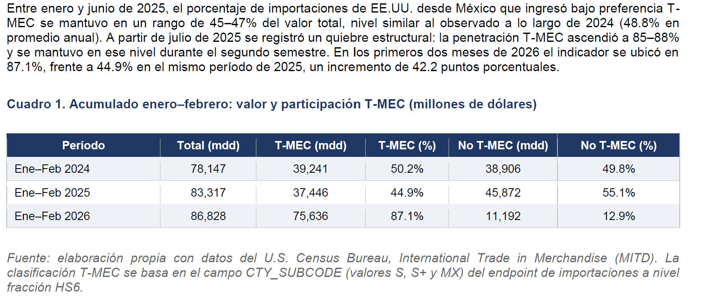

[ captura del dashboard
img/census.png ]

Comercio México–EE. UU.
Dashboard interactivo que clasifica las importaciones de EE. UU. desde México por categoría TMEC/arancelaria, confirmando a México como su principal proveedor.
Ver dashboard →